Appendix
The Builders' Notes
Each builder's own few lines: what they built, what they learned, and their best pictures.
Every builder who worked on the game adds a short note as they finish their part: what they built, what they learned, and the pictures they're proudest of.
Alpha · The treehouse's furniture (2026-10-23)
Every object in the treehouse drawn as pixel art in place of its plain box, in Ed's mismatched style: cottage pieces sprouting leaves, the odd gothic one, and modern clutter (#1017) (#1017)
What I built
art/furniture.js: each of the house's 25 objects as a 3D model, built from its footprint inconfig/house.jsonand never from where it stands, so the house's layout can move it. It includes a gothic canopy bed with a hoodie and a glowing phone on it, a clothes rail strung with fairy lights, a bulb-lit vanity, the crystal ball on its clawed brass stand, curtains that are shut while she wakes, a cauldron with the last of a brew glowing in it, a record shelf with a lava lamp, a pegboard with a neon bolt, a cabinet of skulls, a telescope and the locked bedrooms' doors- A palette for each room, and lights of every kind: candles, bulbs, fairy lights, neon, screens and magic. Each piece lights what's near it, as the creator's room does
- Ed's answers on the mock: the pieces twice their real size, the bed's canopy over its head half, the rooms dim with the glows carrying them, and fewer, chunkier things of clutter that read at a glance
render/houseFurniture.tsturns each piece to face its room's middle and bakes it, the nearest first, a piece a frame.render/houseRooms.tsdraws them between each room's floor and its near rail.tools/house/organic.mjsgives each piece its size and puts its back to the rim of Golf's round roomstools/house/furniture-sheet.mjsdraws them all as a contact sheet without a browser;tools/house/furniture-shots.cjsshoots each room in the gameart/broomParts.js: the Workshop's nine broom parts as pieces of their own (Ed's picks: mismatched salvage, glowing only where a real light would be), in her broom's two colours over the Workshop's steel, brass, wood and rust; her broom on the bay assembled from the parts she's fitted, and each part hung on the biome board's pegs, made stubbier and tilted so it reads at about 20 pixels.
What I learned
- Detail that reads on a contact sheet can turn to noise in the game, where the lighting and the pixel style flatten it. Fewer, bigger things read better. Asking Ed four multiple-choice questions on a mock of four pieces settled the style before the other 21 were drawn
- A piece facing any angle beats a mirrored one: mirroring flips the light with it, and a round room's arc wants every angle
- A part that reads at 60 pixels on a card can vanish at 20 on a wall: drawing it shorter and tilted, so the same features take more of its pixels, did more for it than any detail. And a bright frame round a thing glows over it once the game's bloom is on.
Art builder 1 · The forest's procedural art; overnight phase 1: housekeeping
Trees, bushes, props, ground and areas grown from data, the legend clearings, every creature's sleeping art, and tonight the Stone Shrine, the ravine's spires and the runestones' sigils
What I built
- Trees and bushes grown from plant genomes by the blob generator
- The prop generator: standing stones, cairns, pools, logs, mushroom rings, boulders
- The ground generator: floors, tufts and puddles as data
- Area recipes: an area as one data object (the fen, the heronry)
- The legend clearings: a circle per legend with a carved mossy floor and a ring of the area's tallest trees
- Every creature's sleeping art
- Tonight: the Stone Shrine's great standing stones, the ravine's layered spires, and crisp neon-inlaid sigils on the runestones
- Overnight phase 1: shared helpers moved into
art/core.js, and an art check that draws every generator
What I learned
- Pixel noise reads as camouflage. Ed's "these things look strange" was a rock spire with bumpy normals plus hashed speckle. Deliberate shapes (stacked strata, flat ledges, crisp edges) read at once.
- Generators compose in surprising ways: a henge (a ring of stones) whose every stone became a whole stone circle gave Ed "a circle of stone circles".
- Small glyphs want stamping, not sampling. A sigil sampled in 3D at 40 px blurs into a blob; the same sigil stamped as a 1 to 2 px pixel glyph with a 1 px carved shadow reads by day and by night.
- "Change nothing" needs proof: every exported PNG compared byte for byte (12,274 files), plus the CI bench's pixel compare. The art check still caught a lab-page break the bench couldn't see.

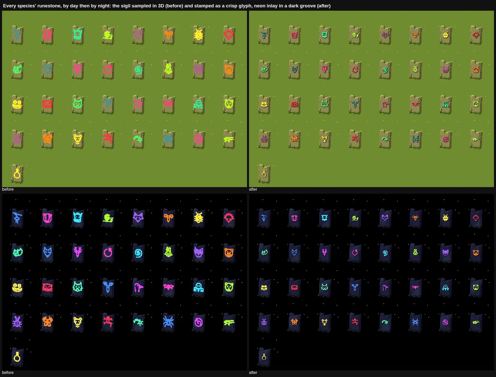

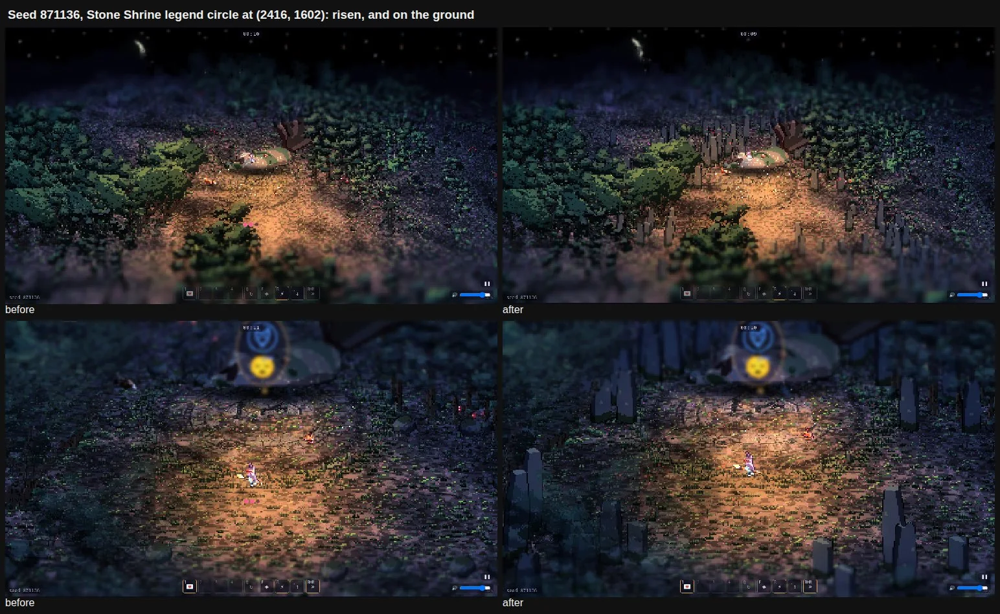

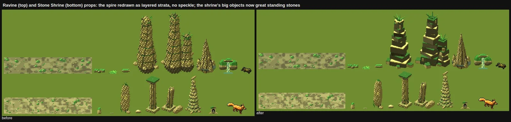

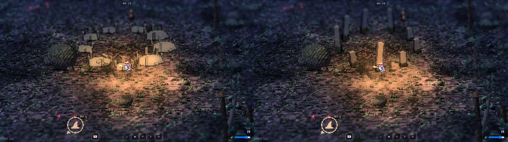

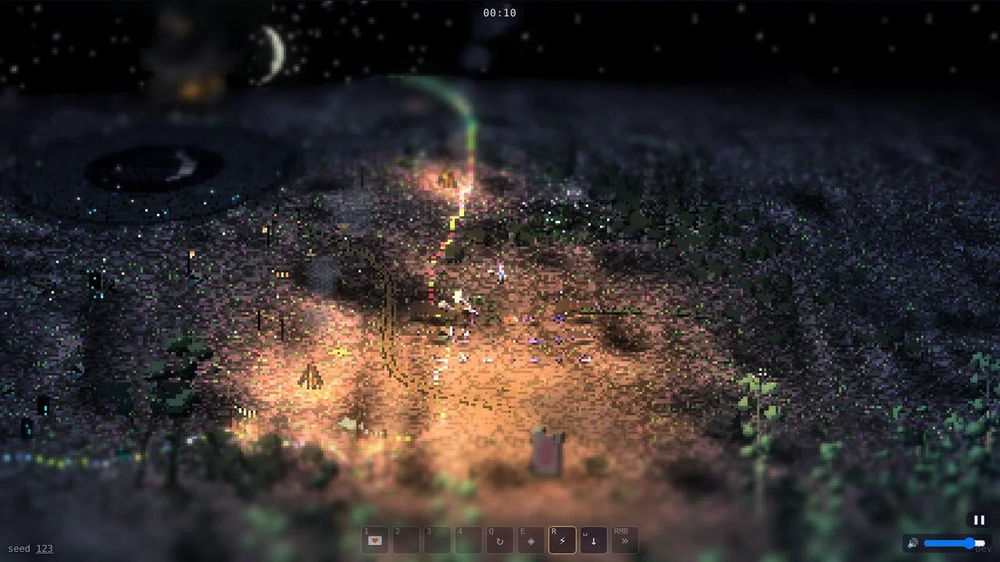

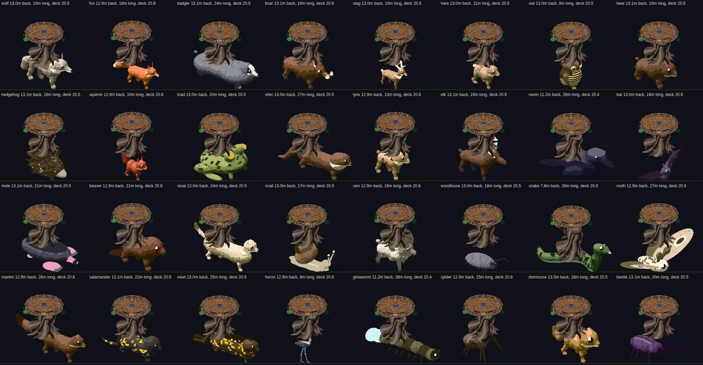
Art builder 2 · Creatures, the leash, the party and the night; overnight phase 1: housekeeping
The creatures' genomes and live rig, the attack visuals, the party witches, the leash and sigil weight, the Party's Over, the beach's edge and the night's light (#291, #349, #364)
What I built
- The look of the leash: the sigil stack sways on a chain of springs above her hat, the threads draw taut and bright as the sigils' weight pulls on her, and her broom strains and sheds sparks when she's overloaded
- Tonight's phase-1 slice:
render/leash.ts(1,335 lines) split into glyphs, stack, projection, bubbles and combat, the bench confirming the same game pixel for pixel - The party witches: they fly in for each soundsystem, roam round the dancefloor and swoop past with rainbow glow trails
- The Party's Over: when the last soundsystem falls, the lights go out in a ripple outward from home
- The beach: the woods end in a scalloped edge of bushes, grass and palms that follows the sand's bays and narrows; moonlit grey sand, not daylight cream; her light a lantern's warm pool, not a sunny spotlight from the treetops; no more moiré on the sand while stargazing
- The tilt-shift: half the blur and a wider sharp band, so the miniature look stays and much less of the screen smears
What I learned
- Find the number before changing the look. The treetop glare wasn't the colour; it was her light's reach, sized as a share of the screen, which from the treetops came to 169 m. Logging that one value pointed straight at a two-line fix.
- A pixel-art shader has to know its own scale. Patterns one art pixel wide alias into stripes at a squashed camera angle; measuring art pixels per screen pixel (
fwidth) and fading the fine detail cured the stargazing moiré. - A refactor that "changes nothing" needs a machine to say so. The new bench:quick compare (same rules state, 0 pixels differing) made a 900-line move safe, and even then a parallel PR's 11-line change had to be carried into the new module by hand.
- Walk cycles are about the box as much as the legs: the heron's new 4-frame wader walk jittered until every frame shared one crop and one scale (still to come, in phase 3).

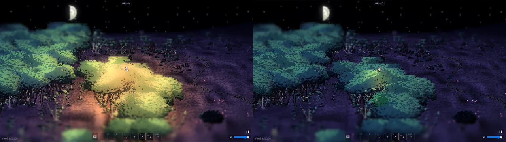

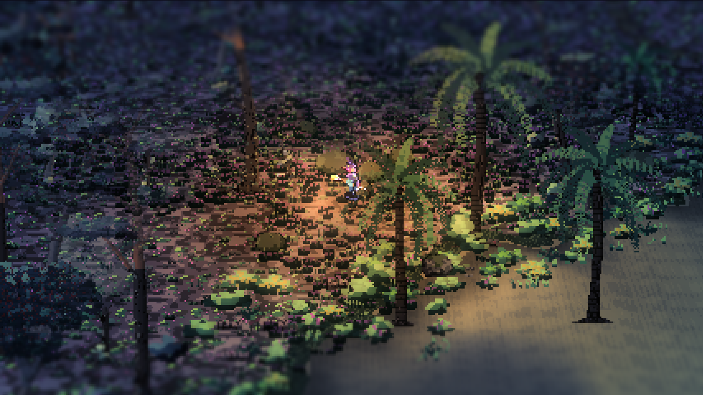

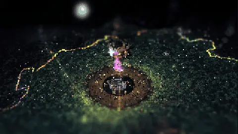

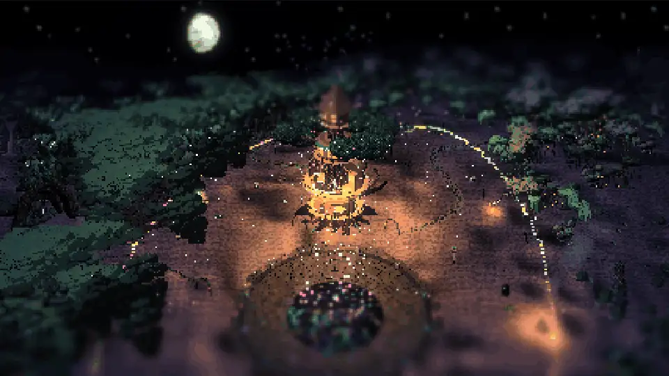

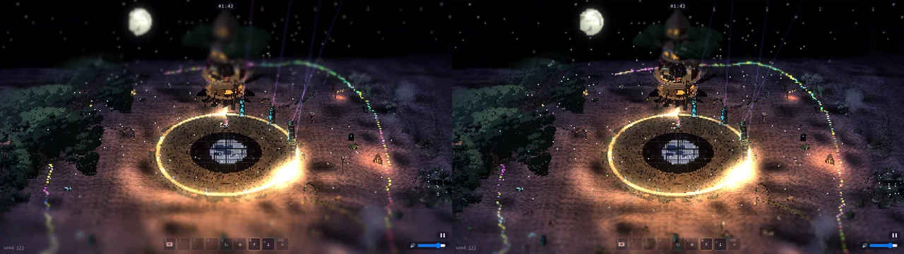
Art builder 4 · Art
The soundsystem generator: every area's soundsystem its own, turned to the dancefloor, bigger further out, breaking in stages (#541, #554)
What I built
- A genome per area's soundsystem (
art/soundsystemGen.js): profile, tiers, stone, crystal, moss, runes, lean and a projector on top, dealt as one set a map so no two are alike (#541). - Each one turned along the line to the dancefloor, its front always to the camera, and from 0.8 to 1.6 times the size between 120 m and 1000 m out.
- Three stages of damage from its health before it falls, each stack breaking its own way: dead cones and cracks, a block knocked off and the projector cracked, then its top tiers fallen.
- Baked by the art workers at each area's own yaw and size, ahead of its wave, with a preview page of five real maps and a reroll.
- The World Tree, home's island sigil (
art/sigils.jsISLAND_SIGILS): a Celtic tree of life in the sigils' stroke family, its crown climbing into a band of knotwork, two strands weaving over and under, its roots spreading low and flat, drawn freehand rather than mirrored; through the boot the dancefloor writes it on stroke by stroke as the pulse goes round the ring (islandTiles). - Every island's picture for the legends' dreams and the sea chart (
art/islands.js,src/rules/islandShape.ts): its coastline by the map's own coast maths, seeded by its kind and sized by its phase, a dark island in a rim of sand with its legend's sigil on it, whole pixels at a bubble's 30, or a path for the chart. - The dancefloor's sigils keep to the island (
islandKinds,rules/dancefloor.ts): only the shapes of kinds on its roster come round, and the World Tree joins them; home's own cell, whose type no roster deals, had been slipping a stranger's sigil in. - The treehouse deck (
rules/treehouse.ts): a round deck 22 m up on the Ent, landed on from the treetops, walked round its map table and behind its decks, the world slowing to a tenth there as in a legend's circle, the sea chart opening at its table; with placeholder meshes till the Ent's art. - The treehouse deck in play (#717, then the Ent's art swapped in): a round deck 22 m up on the treehouse Ent, landed on from the treetops and walked at a tenth of the world's time, the DJ decks along its front where each night starts, and the map table in its middle carrying a live miniature of the sea chart, E there opening the chart to sail from at any time.
- Arriving from the sea chart (the game's half of the zoom to an island, with Charlie's chart half): the chart's last frame shown at once while the night builds, then the game's camera taking over at the chart's own, carrying on its speed north, down low over the forest, up to frame the dancefloor and the Ent, and down to her decks, where the night starts.
What I learned
- "No two alike" needs a measure: two stacks counted as different only when they differ in at least two traits, and the set is dealt nearest first so a re-roll falls on the further one.
- A wide stack turned side-on is a sliver, so the turn eases off towards its limit (a tanh) rather than stopping dead at it, a smaller limit for the widest profiles.
- A colour rule beats a list of good pairs: no crystal within 60 degrees of hue of a warm stone kept every stack's glow readable.
- A sigil for 30 floor tiles wants a thinner line than the sigils' own: at the usual stroke the branches merged into a block, at two-thirds of it they stay apart and the dark lobes either side of the trunk carry the shape.
- An island drawn at the map's own 8% wobble is a coin at 30 pixels: it took a coastline nearly four times as rough before 32 islands could be told apart by shape alone.
- A new place to stand touches every "is she on the ground?" in the rules: on the deck she's on the ground for walking and the camera, but not for fights, runes, notice or naps, so each of those checks had to say which it meant.
- A flat sprite of a 3D platform can still hold a walker: split it into far and near halves, push each along the camera's rays and scale it back to its own pixels, and draw her on the floor as the art sees it rather than where the camera would put her, so the art's steeper view and the camera's never disagree.
- A camera flight across the island has to move everything that is drawn round her (the ground's window, the hills, the haze, the culling) to the camera's aim; the game assumed the view and the witch were never far apart.

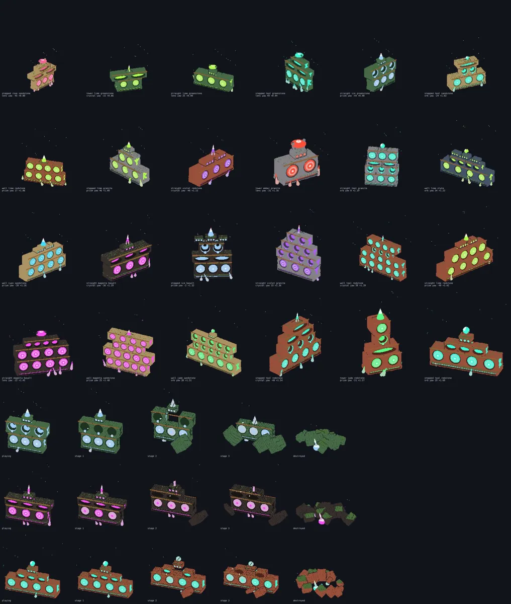

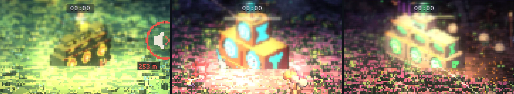
Balance 2 · Balance: bot sweeps
Long bot sweeps for the balance builder: the sweep script, the map's size and the clear-to-transform population (#365, #446) (#365, #446)
What I built
tools/balance/sweep.mjs: many seeds of many bots through the real rules in worker processes, to 90 game minutes and more, each run appended as it finishes so a sweep survives a restart; tables of when each bot loses, its knockdowns, invites, quests and how far ahead of the pulse it clears;--overlaytries tuning and bot options without editing the tuning filetools/balance/mapsize.mjs: how far the best bots get, to size the map: radius 5.6, about 94 areas (#446)- The populated forest's numbers for clear-to-transform: a threat curve by route position, each species' mix of young and adults, two babies an area and at least one young or adult in every wild area, about 870 creatures a map
What I learned
- Fighting value undercounts adults: an area of adults is harder than its F says, so adult-heavy kinds want a lower threat, which also keeps the creature count down
- A harder forest hurts careful players before careless ones. The careless bot outlasts it by inviting in bulk and paying almost nothing for a knockdown, so making careless play lose is a question of what a knockdown costs, not of the population
- Hurrying waves after a lost soundsystem (lossPenalty 120) made the careless bot last longer, not shorter: every hurried wave gives it another soundsystem to lose first
- A playtest's creature count of 1,909 against the model's 826 was the browser remembering an old 14×14 map size, not a bug: check the overlay's area line before the numbers
Foxtrot · Builder and bug hunter; overnight phase 1: housekeeping
The soundsystem alarm, ley lines with a minimum turning radius, quests that calm a wild area, and tonight's dead-code sweep, tool READMEs and a faster test suite (#361, #381, #385, #388, #389, #405, #774)
What I built
- The soundsystem alarm (#361): edge cues that point at a soundsystem under attack, with how hard it's being hit.
- Ley lines with a minimum turning radius (#381): Dubins curves of 25 m through every runestone, with no hairpins and no V at a stone, still within Ed's crossing rules on 40 seeds.
- A quest done in a wild area now calms the creatures already living there (#385).
- Phase 1: the dead-code sweep (#388), a README per tools directory written from the scripts' own headers (#389), and a test suite about a quarter faster (#405).
- The flying squirrel and the Mistwood (#774): a new animal for a later island, its gliding skin a new evolution feature, a glide pose, and a roam that sails from spot to spot through the trees.
What I learned
- Curving a route changes its crossings, so the route's order and the curves have to be solved together.
- Turning off per-file test isolation is cheap speed, but only once every test that changes shared state puts it back. CI found one that didn't (the bend uniforms) that my local shuffles missed.
- With a dozen builders merging, a "game unchanged" bench goes red from a stale base as often as from a real change, so merge the prototype right before CI.
- A new area type changes every random map unless it is kept out of the random pool, so a new animal's area is placed only by its island's roster.

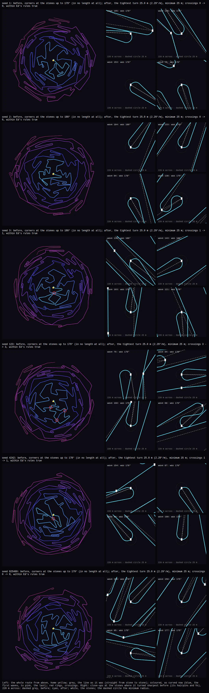

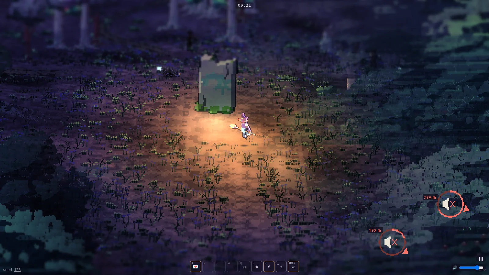

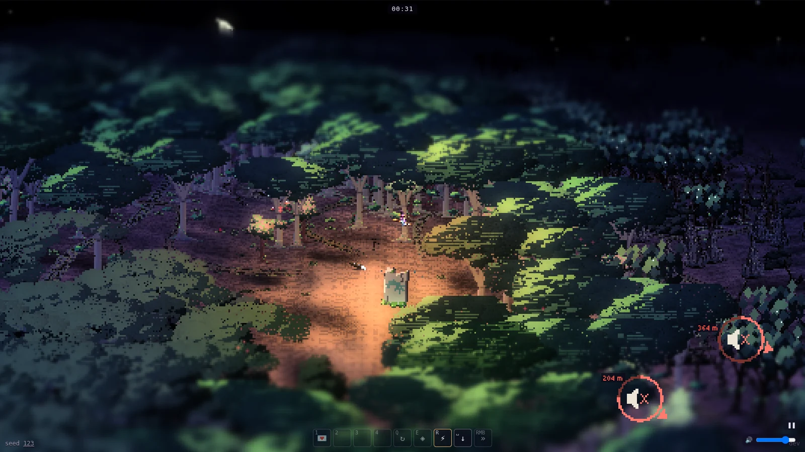
Golf · UI, the bedroom and the canopy; tonight's phases 1 to 3
The bedroom as the front door, legends that say what they want, the canopy's hole, and tonight one way to build UI, lazy-loaded panels and a slot for hand-drawn sprites (#333, #341, #348, #357, #373, #391, #397, #400)
What I built
- The bedroom as the front door (#333, #341): the game opens straight into her room; the old start card's Controls, What's new and Options became tabs in the creator; a WASD keycap hint drawn into the floor in the room's own pixels; the party-spell scroll stays rolled up until the forest has loaded, then unrolls; a pixel-font pass makes the whole room one pixel scale (Tiny5 and Jacquard 24), laid out at four window sizes and on a phone.
- Legends tell you what they want (#348): the legend card names its boon, and the dream bubble points by compass to the nearest runestone of the creature it's dreaming of.
- The canopy (#357, #373): the hole round the witch went from a hard circle to a ragged, drifting, organic one; then three fixes from Ed's notes: straight-line cut-offs (partly faded crowns no longer hide the trees behind), horizontal streaks (distant crowns averaged over an area instead of point-sampled), and fir trees in the Norway forest that had no trunks.
- Phase 1 (#391): one way to build UI elements (
h()), proved to change nothing by dumping the DOM before and after (identical) and by the bench (0 pixels differ). - Phase 2 (#397): the bot game and the decisions panel load only when they're used; then a profile of why the bedroom takes about 13 s to appear.
- Phase 3 (#400): a slot for hand-drawn sprites: drop a PNG at
art/overrides/<species>/<pose>.pngand it replaces that generated frame.
What I learned
- Prove "nothing changed" with the page's own structure: pixel benches miss a DOM attribute out of order; a sorted DOM dump catches it.
- Measure before you split. The "code-split the bedroom" brief assumed download size was the problem, but the bundle arrives in 42 ms; the time goes to a 3D raymarched treehouse baked on the main thread, and a tapestry drawn one
fillRectat a time. - Benchmarks lie when the machine is busy: my first before/after said the change was 30% slower; it was competing with my own test run. Run interleaved, alone, it was identical.
- Depth and transparency fight: a crown that's half faded must not write depth, or it silently erases every tree behind it in a straight line. That's where the cut-offs Ed saw came from.
- A uniform declared vec4 in one shader and vec2 in the other draws nothing at all, without an error. Now the shot script fails on any shader warning.

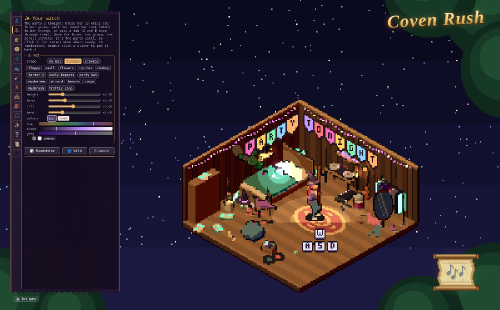

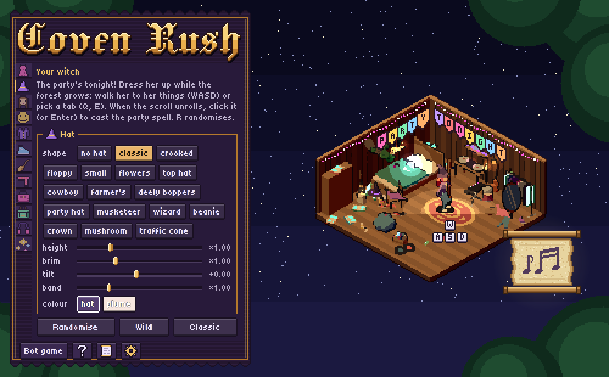

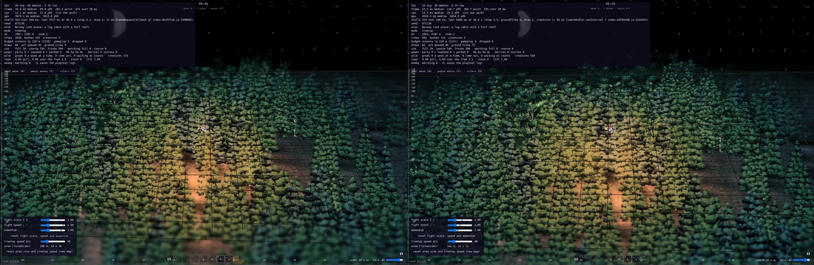

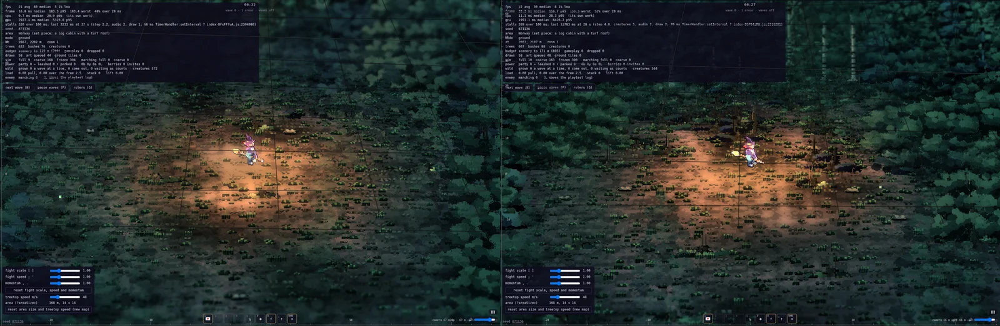

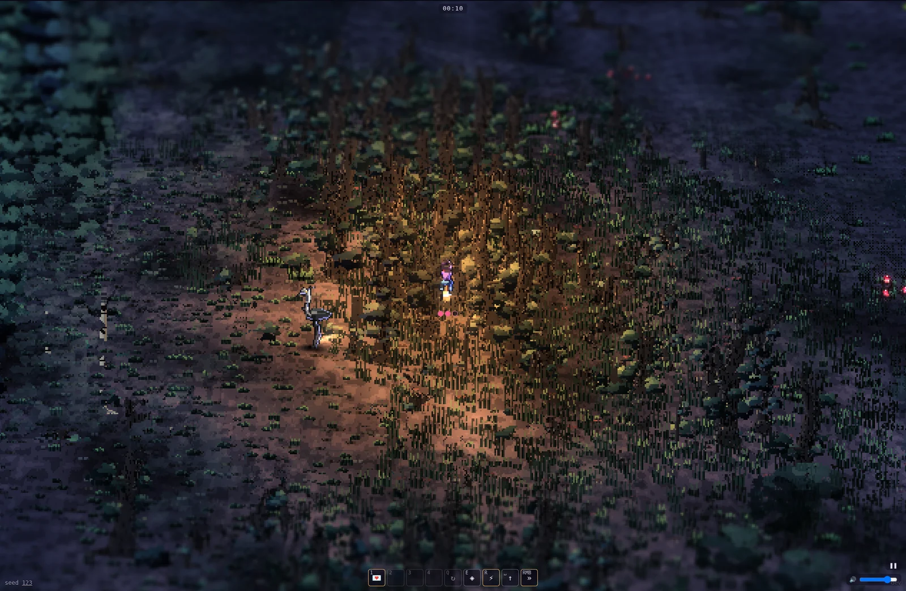

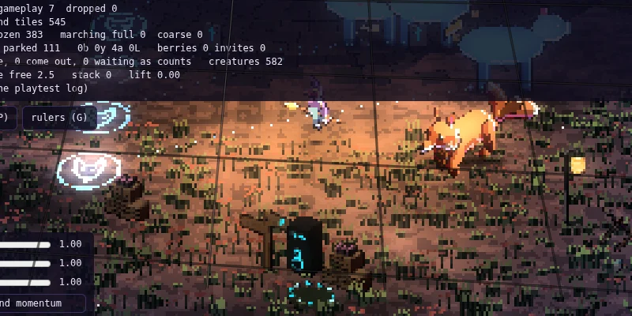
India · The menagerie: how animals are generated
The creature generator reviewed and lifted at the root: jointed legs, a frame under the coat, faces with bones, an elder kit for legends, a growth check; then Ed's body profile and spine, so no animal is a sausage; then the growth batch, Ed's review sheets and the six bodies he approved from them; then the music's singer (Ed's review, 2026-10-14): the plan, an alto in tune, and two voices to A/B in the Music Lab; then the biome forests (Ed, 2026-10-23): a look for each of the eight compass biomes over any species, baked once, so every island's woods belong to their part of the world; then the game's first screen (Ed, 2026-10-23): a fresh game wakes her in her bedroom on home rather than opening on the sea chart; then the sail's transition (Ed, 2026-10-24): the next island made while the chart flies her in, the chart's zoom waiting for it, so the dive follows with no frozen frame; then the biome looks by ring (Ed, 2026-10-25): semi-temperate near home, the full look furthest out (#800, #812, #822, #823, #821, #819, #833, #834, #843, #849, #859, #866, #917, #920, #1026, #1043, #1063, #1110, #1149)
What I built
docs/art-review/menagerie-review.md: the creature pipeline end to end and its weaknesses measured (knee angles, level-to-level silhouette distances)- Legs with real joints and a stance by species: shoulder, elbow, wrist, paw; hip, stifle, hock, paw; hooves, pads and flat soles (
quad3d) - A frame under the coat: withers, a pelvis, a loin, a brisket, a nape and a throat
- Faces with bones: a brow ridge, cheeks, a lower jaw with a mouth line, whiskers
- The elder kit: grizzle, a torn ear, a broken tusk or horn, a torc, rings, earrings, leg bands, a garland, bells, for any legend (
evolve3d) - The growth-not-scale check: each level's silhouette against the level before, scaled to one box
- The body profile (
body.profile): width and depth set apart at five stations along the body (shoulder, ribcage, waist, loin, hip), the torso lofted through them; a wide deep chest and a slim waist for the big cats, the canids and the deer - The spine (
body.spine): a crest standing on the back line or a groove cut between the back muscles, by station; the boar's bristled crest, the cats' and the wolf's groove, the deer's shoulder line - A view from straight above for the tools (
TOP=1on the lineup preview), so a body's girth can be judged on a sheet - The growth batch: levels that grow as animals, not as scaled copies, for the species the growth check warned on (#843, #849, #859)
- Ed's animal review sheets: one a biome row as the zoo lays them out, each species on a line at game size from baby to legend with the adult zoomed, the witch for scale, its builder named and its known issues marked (on the shots branch,
previews/ed/review/) - Six bodies from Ed's review (#866): the polar bear's head low on a longer neck over a high shoulder, the unicorn tall on long legs with a horse's head, the badger's shoulders, waist and wedge head, the rhino's horn growing by level and its own young, the crocodile's wide flat head with its jaw line and its legs out to the sides, the snow leopard's longer legs, thicker tail and bigger paws
- The body knobs those needed (
quad3d, each 1 or off as built):body.tailK(tail thickness),body.pawK(paw size),body.sprawl(how far a sprawler's legs go out),head.skullYandhead.skullZ(a flatter or wider skull) andhead.jawLine(a flat jaw's mouth as a dark line between the jaws, drawn while it's shut) - The singer's plan (#917, docs/backlog/music.md): the vocalise measured (its one G4 note retuned up to 16 semitones, so a chipmunk; its chorus, octave and shimmer smearing it up to 36 cents off), three slices, and Ed's choices from four rounds of questions
- The alto (#920): the sung line an octave down, G3 to G4, stepwise within a fifth with its phrase ends bent to the root, sung only in the breakdowns and builds, with a swell into each note, breath, the recording's flat first quarter second skipped, and two effects chains by place (pure for the breakdowns, dark for the dark families);
node tools/music-lab/tune.cjspitch-tracks the line and fails over 20 cents - Two voices to A/B, live in the Music Lab: the alto sample set (the woman's note shifted with its formants kept, every two semitones, built offline from
samples/sources.json's derived entries) and a vocal-tract voice (Pink Trombone's tract in an AudioWorklet, an alto's length), with a breath slider and a chain choice - The biome forests (
art/flora/biomes.js, #1026): each biome a look over any species at bake time (leaves, bark and moss tinted after the night palette, the tree knobs nudged, snow, the jungle's flowering vines, the swamp's Spanish moss), an island blending its two by bearing, carried on the area art job and its cache key; nothing per frame - Trees moved home in nine areas: no hawthorns in the savanna or the badlands, no wild olives on the glacier crags, no boreal aspen on the mangrove mudflat
- A fresh game's first screen: asleep in the dark while home's night is made, then the wake-up in her bedroom; What's new and Options on the pause page (#1063)
- The ground's cost measured part by part (tools/bench/ground.cjs) and its unused lake and beach code compiled out: a fifth off the forest floor's draw, the picture the same to the pixel
- The sail's transition: the next night made under the sea chart's flight, the flight easing into a hover until the night's ground, house and shaders are ready, the dive's own areas drawn first and the dive coming in from far out to sea (
tools/view/sail-timing.cjstimes it) - Biome looks by ring: each island's forests take its biome at its ring's strength (55% at ring 3, 80% at ring 4, full at ring 5), mixed toward temperate, its art cached apart by ring
- Ed's tuned leaf jitter and spooky grade as the built defaults (his pause-page sliders, v4522)
- Softer area borders: neighbouring areas' trees mix over an 80 m band (it was 40) that itself wanders, with a pause-page slider for its width
What I learned
- Measure before you draw: one script through
rigPartsshowed nineteen species standing on four vertical columns, which no amount of shading could fix. - A generator change lifts every animal at once, but every knob needs a default that keeps a species itself, or the forty records drift together.
- At game scale the smooth union eats small holes: an earring reads as a ring only once its hole is wider than the blend.
- Lofting a body through five stations looked right from the side and lumpy from above until the slices ran every tenth of the length with the stations interpolated: the smooth union only hides bumps smaller than its blend.
- A groove down the back needs a waist first: cut into a tube it reads as a scratch, cut between two muscle masses it reads as a spine.
- A review sheet is only useful if everything on it is on one scale: once every species stood beside the witch at game size, Ed could point at six bodies in one pass, and each fix was a few numbers in a genome record.
- A longer-legged body lifts everything it carries: the snow leopard's nap failed the art check (its ground origin above the sprite's middle) until the curl was tightened, so a body change has to be checked asleep too.
- Measure a voice before judging it: a pitch tracker over the sung line said in numbers what Ed heard (out of tune), and found the cause in a sample's first quarter second singing 20 cents flat.
- A physical-model voice drifts on purpose: Pink Trombone's glottis wanders a few cents by design, which reads as a singer solo and as out of tune in a chord; one knob scaling the wander turned 46 cents off into 13.
- Tinting a tree by hue does nothing: the night palette squeezes every green into a narrow band, so a biome's colour has to go in after it, in RGB. And the per-tree autumn jitter that makes a temperate wood lively turns a snowy fir pink, so each biome keeps only its share of it
- On the cloud's software renderer, shader code behind a uniform that's switched off still costs: measure by switching parts off in the page, and prove a saving by drawing old and new back to back in one call, since a live frame never quite stands still
- A blend has a price in identity: areas are about 168 m across, so most ground is within 80 m of a border, and doubling the band took an area's own trees from about 77% to 59%. Measure that share with the test's own map before setting a threshold; a quick script on another seed told a different story

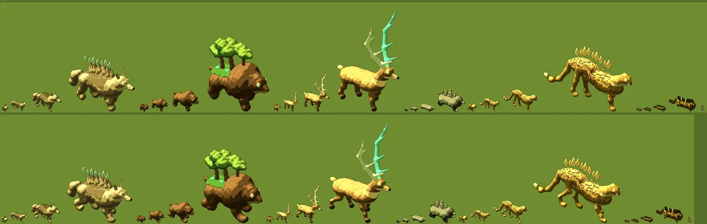

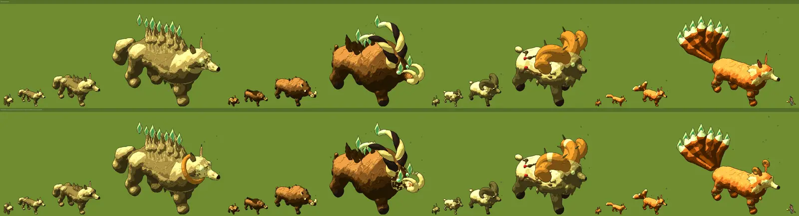

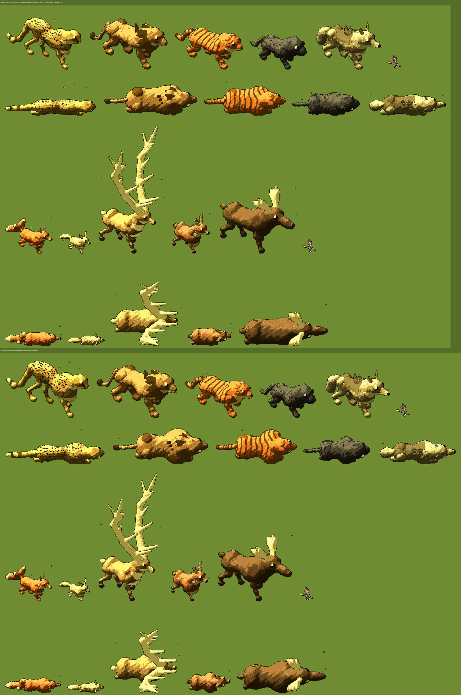

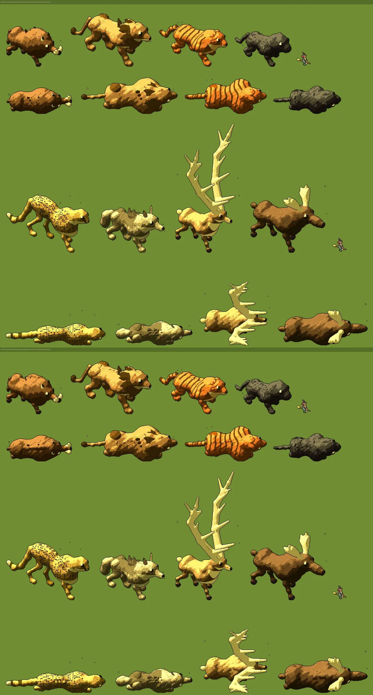

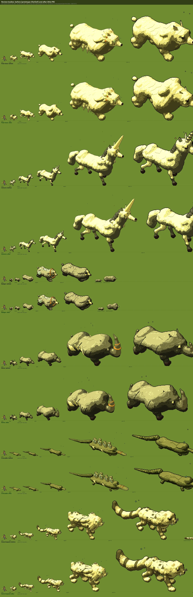
Juliet · Housekeeping and performance, 2026-10-13
The creature, flora, area and decisions registries split one file a thing so builders stop colliding; the art check sharded and in CI; the treetop stalls and the garbage behind them; the map's coastlines made off the page (#837, #844, #847, #848, #851, #852, #860, #869, #870, #872, #875, #884, #892, #918, #922, #1034)
What I built
- One file a thing (#837, #844, #847, #848, #851, #852): a creature is a folder with its genome, sigil, legend, nap and config; a tree species a file with its baseline; an area a folder with its recipe, its kind line and its trees; the decisions a fragment a pull request; the lab pages built, not committed. Each registry's index is generated, each has a check in
npm test, and anadoptthat moves a record a merge pastes back into the old array out to its own file. - The art check (#869, #872): the sprite checks dealt over a pool of pages and the lab pages opened in parallel, 2 hours to 37 minutes with the same output; then in CI, only the creatures and areas a pull request touches, the whole on pushes to the prototype.
- The treetop stalls (#875): a probe that runs the game's own loop at a spot under the sampling profiler and says where the JavaScript's time went. It found the art cache written on the page's thread (the workers keep it now), the reverb impulses a
Math.powa sample, and the map table's miniature building every island's meshes on the page. - The churn behind the collections (#884): the frame's garbage cut by a quarter (the wave pointer's ring worked out once, the creatures', berries', party pieces' and motes' records pooled, the light budget without a record a light), and the real cause found with heap snapshots: the atlases' pixels kept on the page after the GPU had them, 360 MB growing 70 MB a minute, which the browser answered with full, synchronous collections. They're let go once uploaded now.
- The map's real coastlines: each island's land, heights, lakes and the ink of its sigil are made in the chart's worker (one job an island, the chosen one and its neighbours first) and kept in this browser by world and build; the page only wraps what comes. No round stand-in: an island rises out of the sea as its land arrives, and the map table at the decks asks only for what's kept, so nothing is ever made while she flies by the treehouse. The chart's reshapes went from 1.3 s on the page (one of 0.5 s) to 80 ms in all, none over 23 ms.
- The ground-mode GPU cost (Ed's overlay: 21 ms a frame on the GPU, 11 on the page): a probe that times every draw call on the GPU found the forest's sprite batch drawn twice (its opaque pass and its see-through pass, each a full rasterisation of every quad) and crowns hidden in the hole round her still rasterised. The vertex shader now leaves out, conservatively, what the pixels could never show: a fifth off the opaque pass, 8% off the frame under the software renderer, the picture the same to the pixel; the rest is the forest's own overdraw, and her see-through circle reaches most of what stands in front of her, so the second pass is mostly the look.
- The wave landings' audio under-runs (Ed's log: bursts of them as each wave landed in a night's first ten minutes): a landing probe found the page quiet and the workers loud, every core but the page's baking all sixty species' art for minutes while the audio thread waited among them. Now only the island's own species are baked ahead, a mole's rig page that was asked for every frame all night isn't, and the art ahead of need keeps to half the workers while the night plays.
- The treehouse plan (#918), written up from six rounds of multiple-choice questions with Ed, and its first step (#922): the hub on the Ent where the deck was, with the map as a water feature pouring into a pool under a golden grating and the magic circle behind the decks, and the balcony she flies straight onto at treetop height, walks off to fly again, or falls from with no broom; the camera pushing in indoors; a knockout bringing her back at the circle, up out of its floor, then the walk to her decks.
- The creatures for Ed's eight compass biomes (#1034): nine kinds re-dressed with their ids kept, so saves are untouched. The stag beetle is now a fire beetle, the spider a tarantula, the grass snake a jungle python, the wildcat a sand cat, the otter a smooth-coated otter, the bat a fruit bat, the bear a black bear and the owl a spotted owl, and the moth became a swallowtail butterfly. They're mostly genome edits; a one-species builder reads the genome's own
look, and draws as before without one.
What I learned
- The page's memory counter isn't the JavaScript heap. Counting live objects after a forced collection showed the heap proper at 32 MB while the counter said 400; the rest was typed-array pixels outside it, and V8 collects the whole heap, synchronously, each time that outside memory grows past its limit. A sampling allocation profile can't see that growth at all; a snapshot diff by kind can.
- Allocation profiles charge a function for the numbers it passes: a double handed to a call that isn't inlined is boxed, so a hot
inView(x, z, w, h)reads as allocating 60 bytes a call. Once the lists and records are pooled, what's left is mostly that, and not worth chasing. - Clearing a Map each frame makes a new table each frame; writing over its entries doesn't. And three.js's
addUpdateRangemakes a record a call, hundreds a frame over the batches: it only reads start and count, so one record a buffer, pushed again, does. - A benchmark that compares pictures must compare the same art: a branch behind the base by a creature-body change fails the bench for the wrong reason. Merge the base first.
- A registry split by a tool that scans text must treat a quoted key as a key: skipping quoted strings lost 18 entries whose keys had hyphens.
- A rise that never ran: the page wrote an island's outline on the shared record before it asked the chart to reshape, so the chart's 'first coming' test on that record was always false. Test what the thing itself has (its land mesh), not what the caller may already have written.
- The software renderer can time the GPU (the timer-query extension works under SwiftShader), and though a frame takes seconds there, the shares between draw calls are what a real GPU would show. Switching a feature off by its tuning knob told me nothing; timing each draw call did.
halfis a reserved word in GLSL. The shader that used it compiled nowhere, drew nothing, and nothing is cheap: I read a 5x gain off a blank batch before CI's smoke and the quick bench's pictures caught it. A probe that measures a draw must fail on a shader error before it prints a number.- An under-running audio thread isn't always the page's fault: a pool of workers on every core but one starves it just as well, and the log's "stall" list, which watches the main thread, shows nothing. Count what the whole machine is doing.
- Interview in rounds of multiple choice with a picture first: Ed answered six rounds in an hour where open questions would have stalled; a mock drawn in the real art kit (the Ent's own model builder) was the design review and most of the art in one step.
- A creature's art has checks far from its own sprite. The fruit bat's wider wings broke the Ent's carrier, which scales a kind's adult to a fixed length and needs its back high enough to stand on. So I measured that one number in node, rather than rerunning the whole art check, and tuned the wingspan by it.

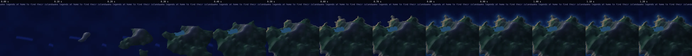
Kilo · Phase 5: the backlog's reckoning
The smaller gameplay backlog checked against the code and a pause-page slider for the flying cooldown (#916); invitations bouncing off the enraged finished; pausing from the bedroom, the volume sliders and the Music Lab on the pause page; the full smoke run's leftover failures cleaned up (#916, #923, #924, #925, #927, #929, #932, #943)
What I built
- Every item of
docs/backlog/gameplay.mdchecked in the rules and marked built (with its PR), partly built or not built; the built ones gathered into one short list at the foot of the page - A pause-page slider for the flying cooldown (
riseCooldown, 0 to 10 s), the delay after landing before she can rise again - An enraged animal refusing a 💌: its angry whine (
chimes.ts refused), its 💢 shaking at its face, and the letter crumpling into a ball of paper flung back the way it came (render/invites.ts);node tools/smoke/bounce-off.cjsshoots it - Pausing from the bedroom: Esc or the pad's Start opens the pause page over her room, backed, her keys and clicks held till it resumes (#925)
- Music and Sound effects volume sliders pinned at the top of the pause page, read live by the sound and remembered on the browser (#927; the first step of Ed's pause-page music lab)
- The full smoke run's harness faults mended (#929, #932: its heath and cave-mouth scenes on the moth's island): the laptop scene hops off the treehouse deck before its ground flight (she was held at the rail), the cave mouth and the heath are found on the radius map (
?island=off: the home island's ten kinds have neither), the boost ceiling is read from the tuning with the Speed broom asked for, the Ent's halves (moved along the camera's rays by design) are left out of the float check, the hills ride check accepts a bob too small to measure, and the five KNOWN entries that pass now are off the list - The Music Lab on the pause page (#943, from my mock with Ed's answers): the pause page's 🎛 button opens the live lab's controls down the right edge over the night's own music, through the engine's own hooks: a jump to any wave, section or record, the singer's A/B voices, breath, chain and arpeggios, the voice effects, every part's level with mute and solo, and the settings copied out as the lab's JSON, pasted back or reset; Esc resumes with it up, ▶ Preview plays a passage in the bedroom;
node tools/smoke/music-lab-pause.cjsdrives it
What I learned
- Most of a backlog from three days ago was already built, in two rule-tweak PRs (#648, #649) that nobody had marked off; a page that says what shipped and where saves the next builder the whole hunt.
- A shallow clone can't tell you which PR shipped a line: deepen it, find the line's first commit, then the first merge on the ancestry path to the main branch.
- In the debug arena the first group is hers (leashed) and letters pass straight through a leashed animal: a shot that shows nothing is a setup bug before it is a drawing bug. Instrument the rules frame by frame before touching the art.
- Under the cloud's software renderer a game frame can take over a second, so a browser check that waits a fixed half second after a key sees nothing change: wait for the value itself.
- A harness that fails on its own assumptions (a scene that flies before she has left the deck, an area the island no longer has, a broom the default witch no longer carries) costs every builder a wasted read of a red run: check the report line by line against the game as it is today before touching a single game number.
- A scene that teleports her to a new area must not wait for the assets' pending count to reach 0: after a move it is the art baked ahead of need (the island's species, their looks and rigs), a job a minute under the software renderer, 10 to 20 minutes in all. Wait on the forest's own counts, then a bounded while for the art. And calm the area first, or the wild watch knocks her back to her decks while you wait.
- A panel that drives a running engine should never own a copy of its state: the live lab's settings module already had the JSON Ed pastes between builders, so the panel is that same state applied through three hooks (a style transform memoised by identity so the engine is set once, a cue transform, and the channels' gains stamped with a version), and the engine stays someone else's untouched code.

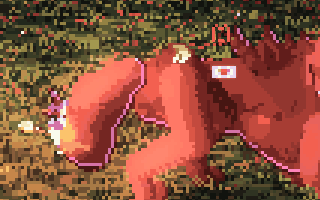

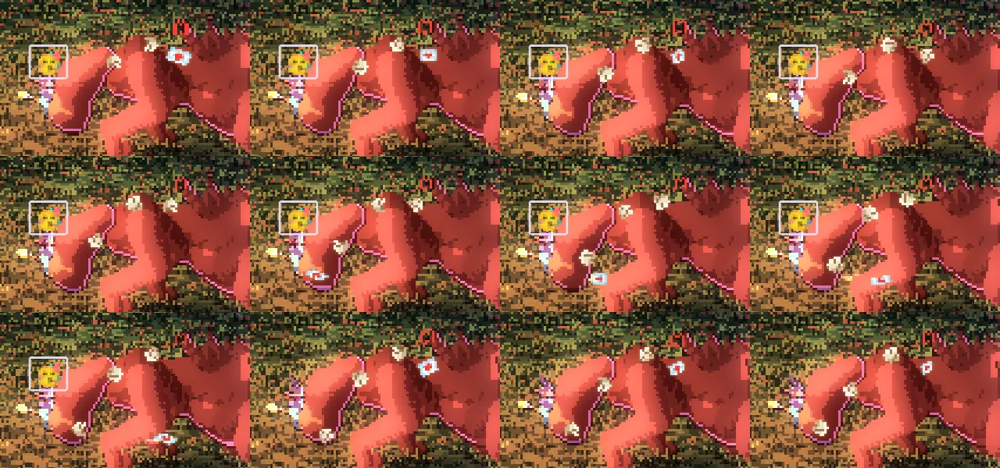

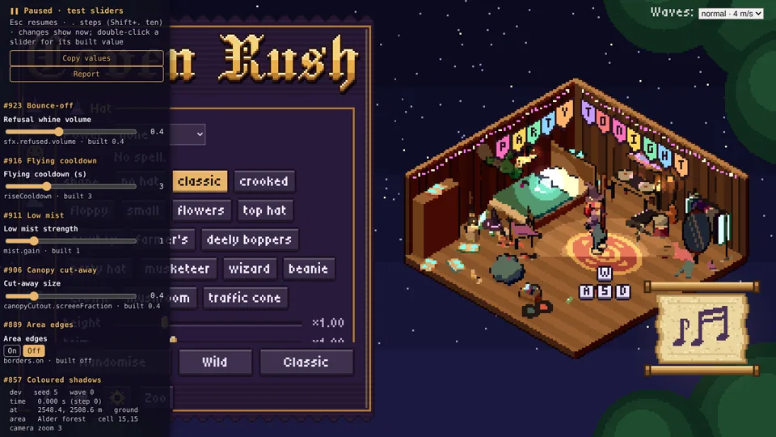

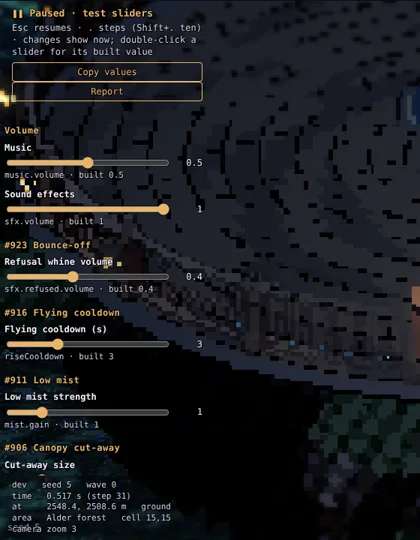

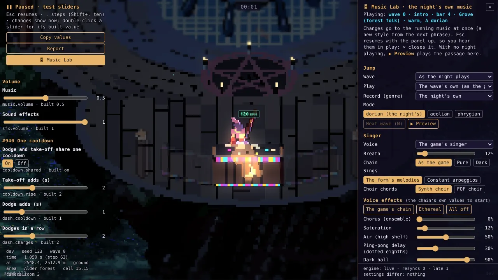

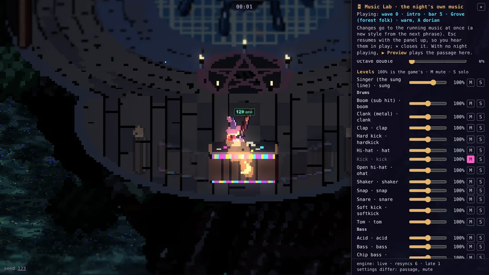
Music builder · The music and sound; the beach's camera and the sea; the overnight programme's audio tidy and CPU audit
One generated track for the whole run, the game's sound effects and voices, and the hunt for why the music cut in and out (#331, #352, #376, #407, #413)
What I built
- One generated track for the whole run: every note and every sound synthesised in the browser, in the music's key, from the run's seed (
config/music-style.json, the engine insrc/platform/audio/musicEngine.ts) - The boot as an intro: the home speakers' boot builds the intro a layer per speaker
- Waves: each wave brings its own sections and a faster tempo
- Legend circles: a sleeping legend's circle slows the world and the music with it, like a slowing tape, while the legend's own layer plays on at full speed
- The afterparty: the music winds down like a stopped record into each area's night sounds and the sleepers' snores
- Voices: the creatures babble in their own voices, and the legends sing whale song
- The beach: near the sea the party gives way to the waves; the camera lowers to the water, lying down she stargazes under the island's treeline, and the sea gets a moon's road of glints
- The overnight tidy (#376): one looping-noise helper in place of thirteen hand-built ones, and the music's scheduling written down in DESIGN.md (look-ahead, slew, held notes, re-anchoring)
- The sea at the edge of the world (#407): a moon road of glints across the water, a softer foam edge, and the bend easing off when she faces the open sea so the north coast's water actually shows
- The sound's CPU audit (#413,
tools/sfx/audit.cjs): a crowd now speaks through one shared mouth re-tuned each syllable (38 audio nodes a burst down to 25), voices give way only to a clearly nearer one, the legends' long reverb is built in idle time, and the cues reuse their sets each frame: in a late-game crowd 342 to 277 nodes a second, and the 45 to 70 ms hitch when the first stone powered up is gone
What I learned
- "The music cuts in and out": every layer that could be wrong checked out fine. The rules asked for continuous music (a 14-minute simulation on the dancefloor never dipped), and the engine scheduled it without a gap (6,724 sixteenths through the real engine, none missing).
- The cause was the page itself: the game's clock stops when the page stalls (the art baking, a new place's first frames), but the audio clock doesn't, and every long frame made the engine re-anchor and leave a hole.
- The fix was to stop letting the music wait for the game: schedule ahead (and further after a stall), ease back into step at 5% at most, and hold a late note rather than drop it.
- Then know whether a cut is real: an output meter measures what actually leaves the game, and an opt-in mic check listens to the room to catch a dropout after the game (the OS, the device, Bluetooth).
- Measure at each boundary (rules, engine, output, room) before fixing: the obvious suspect was innocent every time.
- Count before cutting: most of the audio graph's churn was the crowd's chatter, not the music; the audit found it by sampling who made each node.
- A tidy that should change nothing needs a check that would notice: rendering every sound effect before and after and comparing the files caught a one-character slip (
track?.push(f())skips callingf()) that had quietly dropped the consonants from letters and howls. - The north sea was invisible not because it was dark but because the world's bend tucked it under the horizon: painting it magenta and seeing none of it proved that in one screenshot.

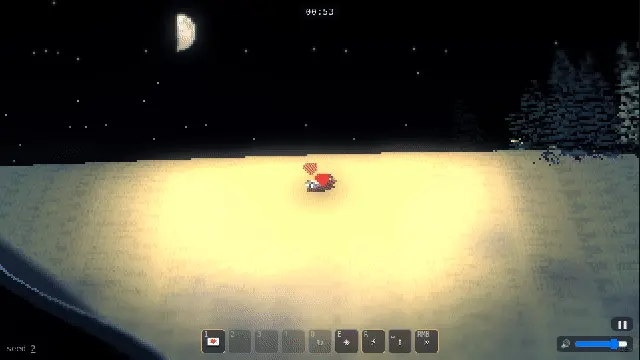

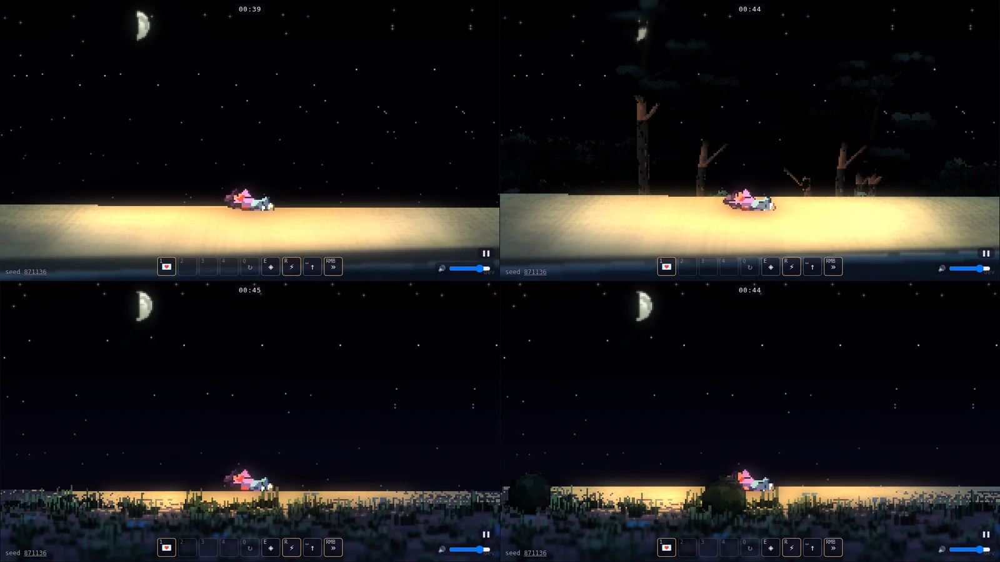

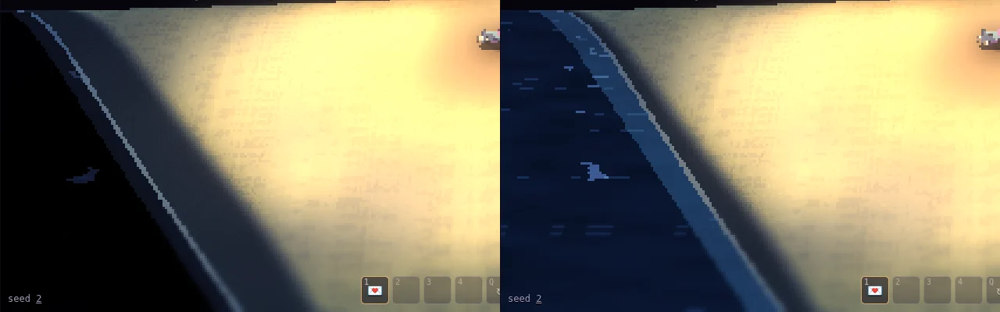
Prototype builder · Phase 1: housekeeping (overnight 2026-10-06/07), and earlier fixes
The "game unchanged" gate, main.ts split into src/app/, the link switches documented, and earlier in the night legend circles, runestones, respawn and copy (#344, #383, #380, #395, #396, #327, #360, #362, #353)
What I built
- The "game unchanged" gate,
npm run bench:quick(#344): the rules to wave 10 on two seeds plus three scenes compared pixel by pixel (the boot, a wave fight, the bedroom), in about 5 minutes, as its own CI job on every PR into the prototype. Every phase-1 refactor tonight used it as its proof; #383 made its fingerprint canonical (keys sorted,_notes dropped), so editing a note in the tuning file no longer looks like a change to the game. main.tssplit intosrc/app/(#380, #395, #396), from 1,000+ lines to 364: the link's switches (tuning, game, view), the HUD and overlay, the debug knobs, the sound, the page keys, the screen shake, the dev Player pick and thewindow.witchhooks.main.tskeeps the boot order, the start and the frame loop. Each PR bench-identical to the one before.docs/LINK-SWITCHES.md: every?switch, what it does and where it's read. None turned out to be dead; 13 comparison relics went to Ed as a decision.- Earlier in the night: legend circles safe from outside attackers (#327); runestones kept away from legends by fixing "ghost areas", cells with no ground in the partition (#360); after a knockout she respawns behind the decks (#362); "kin" for "children" in the legends' copy (#353).
What I learned
- A refactor's proof should be cheap enough to run every time. The full bench takes 45 minutes, too slow for every change; the 5-minute quick one ran on every PR, and it caught me comparing against a stale base.
- Make the fingerprint about the game, not the file: hashing the tuning file verbatim turned the gate red for a comment.
- Nondeterminism hides in the page, not the rules. The bedroom scene was flaky because the creator's animation ran on the real clock; the fix was to freeze the page clock from the very first script.
- Tools that find their inputs relative to themselves bite: running one branch's bench script against another branch's checkout silently measures the first branch twice. Each tree runs its own copy now.
- Merge the base in first. A PR in conflict runs no CI at all: one sat for 1.5 hours looking "pending" when it was actually blocked.
- To move code without changing it, export setup functions and call each one exactly where its code used to run, so the order of side effects stays the same. Then a pixel diff can prove it.

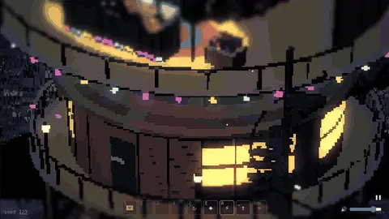

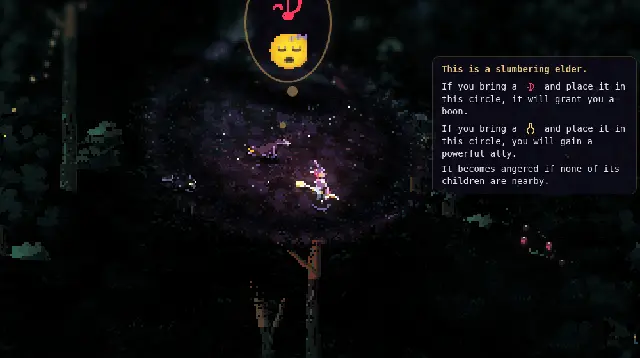

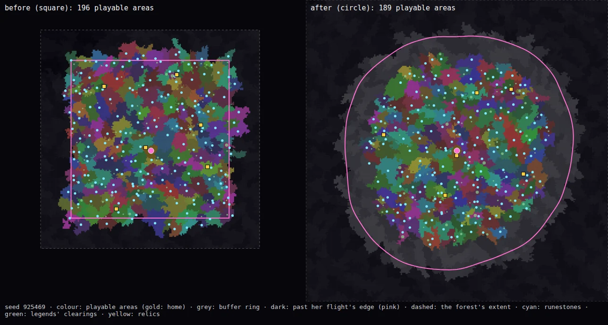

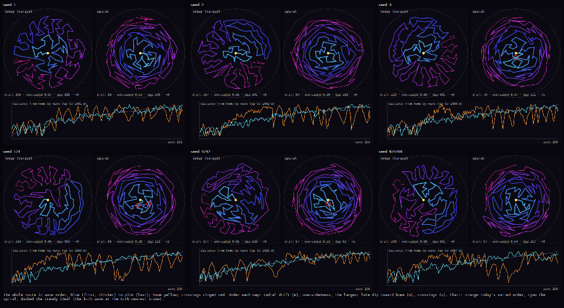

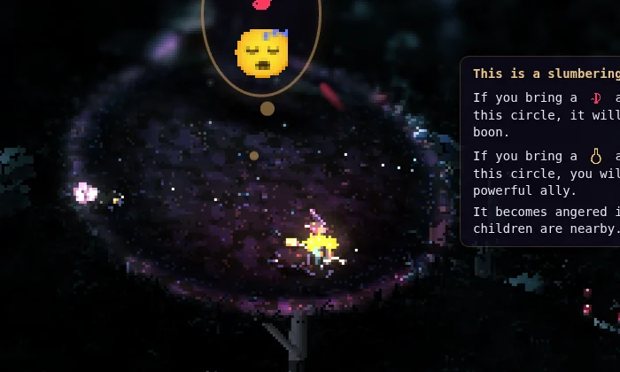
QA · Overnight: watching every phase
Checked every merge into the prototype overnight, benched the start and the end of the night, and walked a whole run headless after each round (#451, #489) (#451, #489)
What I built
- Every merge from #347 to #449 checked against the commit before it with
bench:quick(the rules' fingerprint and three scenes, pixel by pixel), so each change in the game is pinned to one PR tools/qa/journey.cjs: a whole run in headless Chromium, the bedroom to the party's over, a screenshot of each moment, failing on any error, a blank picture or a moment that doesn't happentools/qa/core.cjs: Ed's core design checked in the built game: an area cleared transforms, a wave at a transformed stone only celebrates, the boot is 30 s, nothing spawns mid-run- The full bench at the start and the end of the night, and the late-game probe's heap and draw calls, compared
docs/archive/QA-LOG.md: the night's record, round by round
What I learned
- "The game is unchanged" is only as good as its fingerprint: a tuning knob held inside the buffs' state turned every new knob into a rules difference, until #420 left it out.
- Check each merge against its own parent, not the tip against the morning: forty intended changes hide the one that wasn't.
- A harness breaks when the game changes on purpose: the boot went from five minutes to thirty seconds, and she now stays at her decks through the needle drop, so the scripts wait for what happens rather than for a time.
- On the cloud's software renderer the frame times are almost all drawing; the game's own work is the number to watch, and it went down overnight.

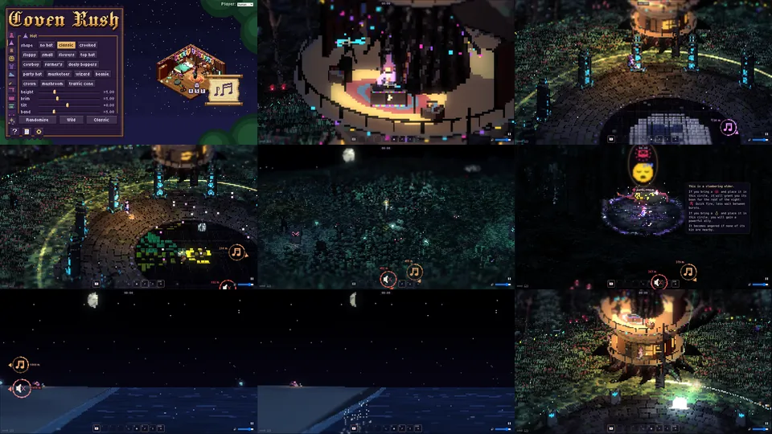